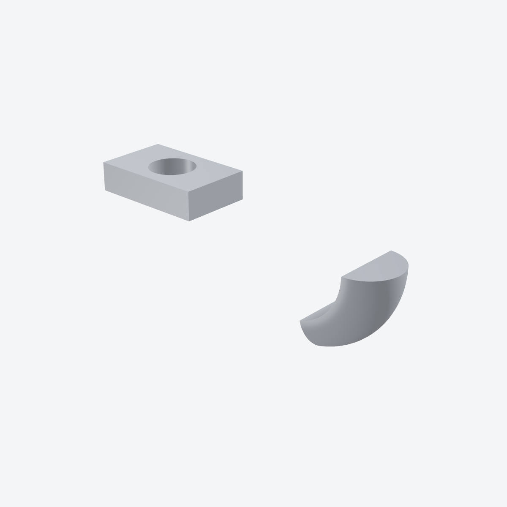
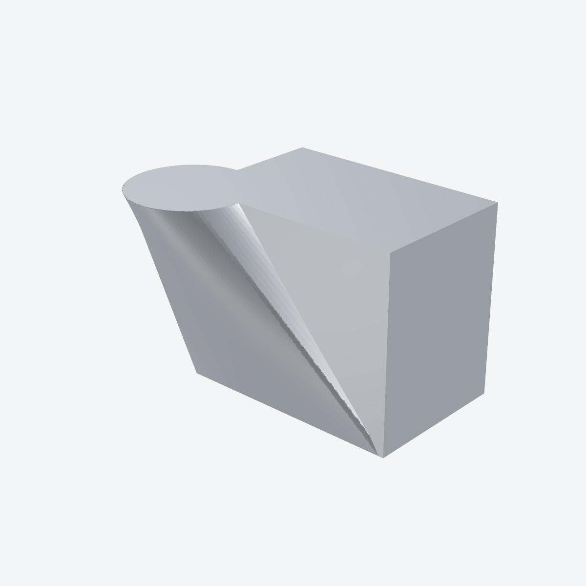
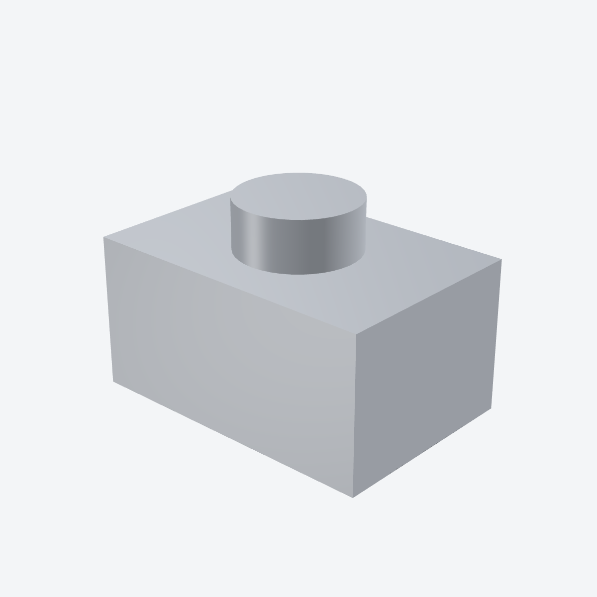
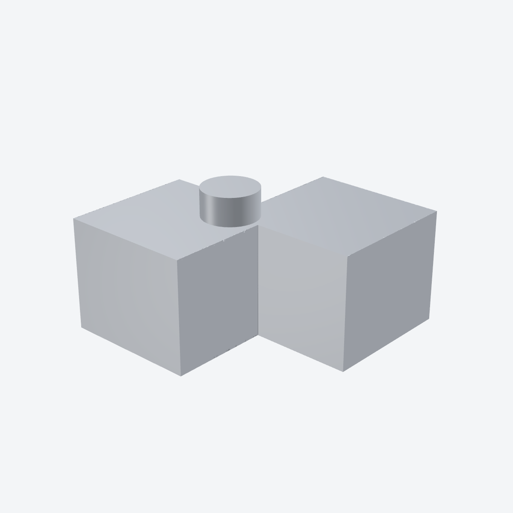
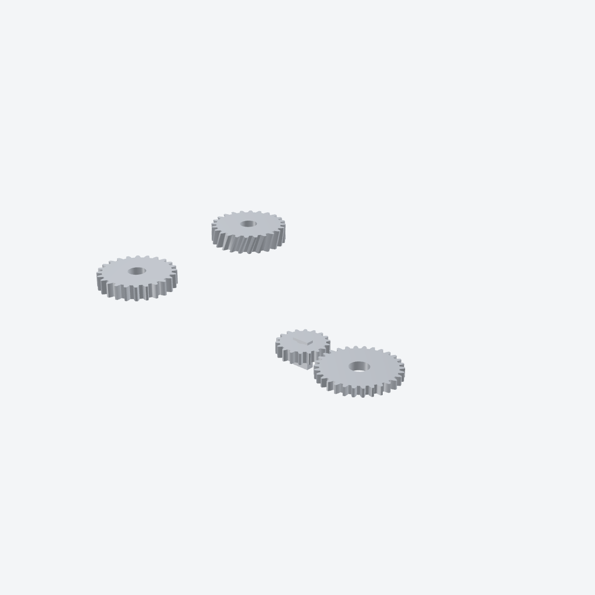

Guide
UI interactions
How the 3D view, sketch tools, constraints, dimensions, and body tools work together.
FlywheelCAD is built as a hybrid tool: fast direct manipulation in the UI, backed by a script editor that stays synchronized with the model. This page focuses on how to operate the visible interface efficiently.
Window Layout
| Top toolbar | A mode pull-down (“3D Model” or “Sketch: <plane>”), then a tool cluster that follows the mode: body operations (Combine, Inspect, Transform, Insert, Mate, Section) in 3D; drawing tools, trim, the constraint and dimension dropdowns, construction mode and extrude/revolve in a sketch. Each cluster has a More (⋯) menu for the rest, and the Script Editor toggle sits at the trailing edge. The full command set is in the menu bar: File, Edit, Sketch, Draw, Modify, Constrain, Dimension, Body, Component and View. |
| Sidebar | A filterable list of Bodies, Components and Sketches, each row with an eye toggle for visibility. Show or hide it from the leading toolbar button or the View menu. |
| Main canvas | Shows either the 3D scene or the active 2D sketch plane. You switch between them as you model. Selecting something shows a read-only Properties card. |
| Right panel |
The live Python script editor. It shows the current model as text and has Run, Stop
and Rebuild All controls for replaying the script; imported modules open as read-only
tabs. ⌘F opens a find bar and ⌥⌘F adds a
replace row (Edit → Find).0.35
|
| Status bar | The sketch solver badge, selection info, the perspective/orthographic toggle and the document-wide Mesh quality menu. |
3D View
Drag to orbit. A plain scroll pans; zoom with ⌥+scroll or a
trackpad pinch. View → Zoom to Fit (⇧⌘F) frames the
model.
Enter sketch mode
Double-click a sketch plane in the 3D view to edit it. You can also switch to any
existing sketch from the toolbar's mode pull-down or the View menu
(⌘1–⌘9; ⌘0 returns to 3D).
Select bodies and topology
In 3D mode you can select bodies, areas, and topology points; ⌘-click
adds to the selection, and a long press lists points hidden behind geometry. Those
selections feed the Body menu, section/project commands, mates, and custom
sketch-plane creation.
Custom sketch planes
Select exactly three 3D points, then use Sketch → New Sketch from 3 Selected
Points…. The app asks for a plane name and emits a matching
create_sketch_plane(...) command into the script.
New Sketch from Coordinates… takes typed points instead, and
New Sketch from Selected Area… starts from a selected face.
Body operations
The Body menu holds extrude/revolve, loft, multi-loft, paths and sweeps,
text, the booleans (union, difference, intersect, combine), transform, pattern,
offset/shell, section, project, and Inspect / Edit… for one body's
quality, cell size and export flag. It also exports to 3MF, STL, OBJ, GLB and
glTF0.35; with nothing selected, every visible body whose export
flag is on is written. Document-wide mesh quality lives in View → Mesh
Quality and the status bar. Per-body color and finish are set from
Body → Set Color….
Components, Libraries, and Assemblies
Insert from Library
Component → Insert from Library… opens a movable browser of the
installed libraries (the built-in standard
library of motors, servos, bearings, fasteners, gears, electronics, framing and more
— plus any of your own under
~/Documents/FlywheelCAD/Libraries/). Pick a part, adjust its parameters
with a live 3D preview, and insert. The module is copied into the document’s
lib/ folder and the import + factory + instance lines are appended to the
script. Update from Library refreshes vendored parts when their source
library changes.
Place and mate instances
Component → Browse / Place Components… places instances of the
components defined in the document. ⌘-click an instance anchor and
another point in the 3D view, then Component → Mate Points… (or the
toolbar's Mate button) snaps them together — the same closed-form mate you can write
as cad.mate_coincident(...). Four points (two anchors of one instance, then
two targets) give cad.mate_align(...) or, with the dialog's Axis option,
cad.mate_axis(...).
Author and insert your own
Component → New Component… starts a standalone component file, and
Make Component from Design… turns the current document into one;
Export Selected Body… and Export Selected Point as
Anchor… promote a body or point while editing one. To place a loose
component .py that isn’t in a library, use
Insert Component from File… — it copies the file in and adds the
instance.
Project files
A document is a flat .py or a .fwcad project
bundle — a folder that keeps the script and everything it imports together.
The File menu converts between them (Convert to Project
Bundle… / Export as Flat Script…), copies a helper in
with Add File to Project…, reveals a bundle’s insides with
Show Project Contents, and opens the script in another editor with
Open Script in External Editor.
Sketch Mode
Once you enter a sketch plane, the canvas switches to 2D editing. The toolbar's mode pull-down shows the active sketch (“Sketch: xy”), and the tool cluster changes from body operations to sketch tools.
| Select / pan / zoom | Use selection mode to pick geometry or closed areas. Pan and zoom tools are available explicitly in the toolbar, and the select tool also supports drag-based selection and point dragging. |
| Draw tools |
FlywheelCAD provides point, line, circle, arc, ellipse, rectangle, and spline tools,
in the toolbar and the Draw menu. Some tools have submodes: circles cycle
through center-radius, diameter, and three-point; ellipses cycle through two-foci and
three-point; rectangles cycle through corner and center-based creation.
|
| Construction mode | Toggle construction mode when you want guide geometry that remains visible but is dashed and excluded from area detection for body creation. |
| Trim, mirror and pattern |
Trim edits elements in place and can split them into reusable fragments. Mirror works
on the selected elements, using the last selected line as the symmetry line.
Modify → Pattern… repeats the selected points, lines, circles,
arcs and ellipses around the point you select last; it writes a loop whose copies stay
linked to the source, with the step angle in an editable variable. The
Modify menu also holds Fillet Corner… and
Merge Points.
|
| Sketch export |
File → Export Sketch as DXF… and Export Sketch as
SVG… write one sketch plane, which you pick, as a 2D drawing.
|
How Drawing Works
1. Choose a tool
Pick point, line, circle, ellipse, rectangle, spline, arc, or trim from the toolbar. Re-click a multi-mode tool to cycle through its submodes.
2. Place geometry directly in the sketch
Draw by clicking in the canvas. During creation the app shows preview geometry, then commits the final points and curves to the active sketch plane.
3. Edit by selection or drag
Click entities to select them. Drag a point in select mode to move it while the solver tries to keep the sketch consistent with existing constraints.
4. Select areas for bodies
Click inside a closed loop in select mode to select a detected region. Those selected areas become the input to extrude and revolve.
Constraints and Dimensions
Geometric constraints
In select mode, pick the relevant points, lines, circles, ellipses, or splines, then
open the toolbar's constraint dropdown or the Constrain menu. Only
constraints that fit the current selection are enabled, such as horizontal, parallel,
concentric, equal, tangent, point on line, fixed, or symmetry.
Dimensions
Use the toolbar's dimension dropdown or the Dimension menu for point
distance, point-line distance, parallel distance, line length, circle radius, and line
angle; Smart Dimension (D) picks the kind from the selection. Each
dimension can be bound to a constant, an existing variable, or a new variable created
on the spot. Dimensions
draw in standard CAD style — extension lines and double-headed arrows parallel
to the measured span, leader lines for radii, and arc annotations for angles —
in a distinct teal so they never read as sketch geometry.
Variables panel
The variables panel (Dimension → Variables…) is where you inspect
named dimension variables, rename them, set their values or delete them, and keep shared
values consistent across multiple dimensions in the same model. Since 0.35 a script can
also use these variables for point coordinates and circle sizes; see
Python syntax.0.35
Solver feedback
After a constraint or dimension is added, the sketch re-solves asynchronously so the UI stays responsive instead of freezing during convergence work. A status badge reports whether the sketch is under-, fully-, or over-constrained — including how many degrees of freedom remain — and, when constraints conflict, names the ones the solver cannot satisfy.
From Sketches to 3D Bodies
When you have one or more closed selected areas, use the extrude/revolve tool in the
toolbar or Body → Extrude / Revolve…. The app opens a small panel
for operation type, distance, direction, or revolve
angle. After the operation completes, return to 3D view to inspect the result and combine
it with booleans or other downstream features. Bodies stay tied to the sketch they came
from — edit that geometry and they re-derive — and selecting a body in the 3D
view lets you delete it (Body → Delete Body, ⌘⌫),
which cascades to any boolean or offset bodies built on top of it.
# Typical sketch-to-body progression
cad.with_sketch("xy")
...
plate_region = cad.region(loop=[la1, la2, la3, la4], holes=[[hole]], inside=(-50, 0))
plate = cad.extrude("xy", plate_region, 10)Esc cancels the current drawing operation or
returns to 3D when idle. L, A, S, C,
E, R, and T switch tools; M mirrors and
D starts a smart dimension. X toggles construction mode.
Enter finishes a spline. ⌘0 shows the 3D model and
⌘1–⌘9 open sketch planes.
Example Gallery
These screenshots come from FlywheelCAD's example test scripts (they are not shipped inside the app) and show the kinds of UI outcomes described above: body creation, multi-plane work, and boolean modeling.
{kind=link}

test_extrude_revolve.py
A typical sketch-to-body workflow: closed regions selected in sketch mode, then turned into an extrude and a revolve.
{kind=link}

test_loft.py
Shows the handoff from a sketch on one plane to a custom-plane feature and a lofted result in 3D view.
{kind=link}

test_boolean.py
A straightforward subtractive modeling flow after creating the source bodies from sketches.
{kind=link}

test_boolean_ops.py
Overlapping bodies selected and combined through union, intersection, and subtraction in the Body menu.
{kind=link}

test_gears.py
Imported helper code generating dense sketch geometry that still ends up as normal, inspectable bodies in the same UI.